01
Write
Syntax highlighting, automatic indentation and Small C++ completion help you focus on your program. Open several files in tabs and adjust the text size.
Explore the tutorial ↗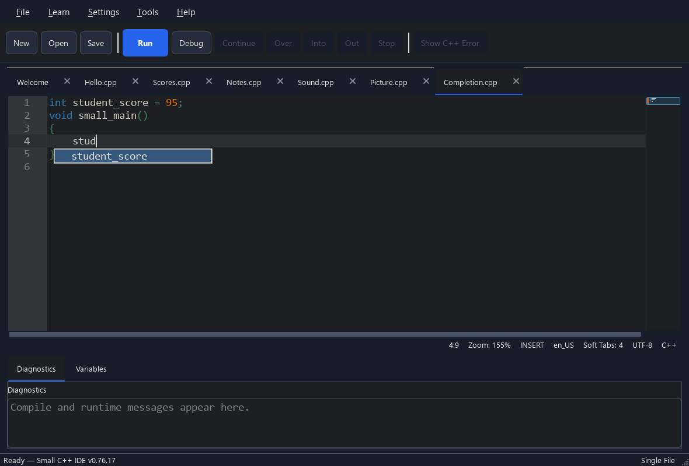
SMALL TOOLS. ROOM TO GROW.
A friendly editor, real development tools and a small C++ library. Start with a few lines, then explore more when you need it.
WRITE. RUN. EXPLORE.
Syntax highlighting, automatic indentation and Small C++ completion help you focus on your program. Open several files in tabs and adjust the text size.
Explore the tutorial ↗
Press Run to compile and run your code with the included compiler. Read a concise diagnostic, or open the original C++ error for more detail.
Explore the tutorial ↗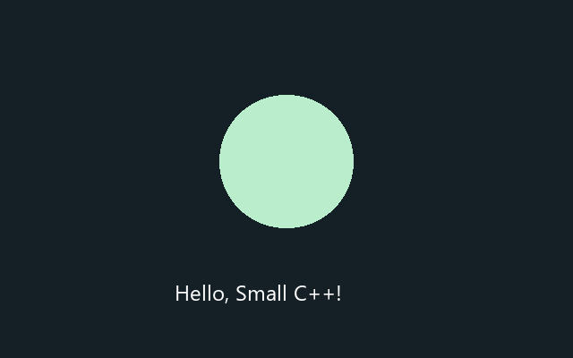
Set a breakpoint, step through your program and inspect variable values. See what changes instead of guessing where something went wrong.
Explore the tutorial ↗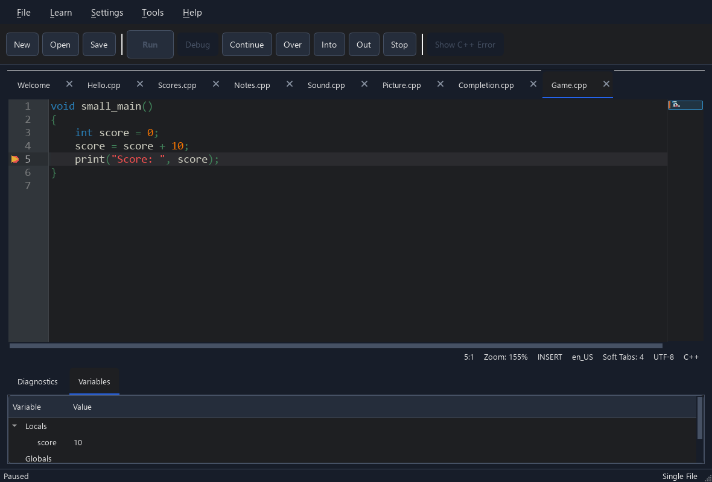
Explore 40 core topics and 2 Image topics in English and Korean. Open tutorial code in the editor, try optional practice and keep track of what you have read.
Explore the tutorial ↗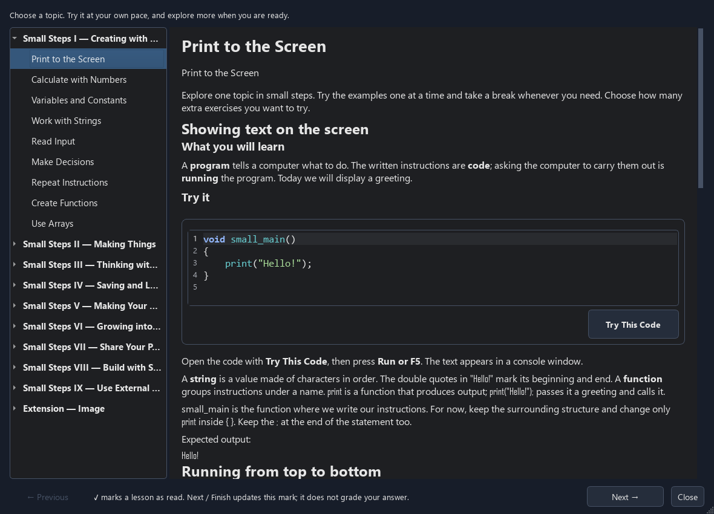
A folder becomes your project, including its subfolders. Add source files, headers and folders, exclude files from builds, or open their location in File Explorer.
Explore the tutorial ↗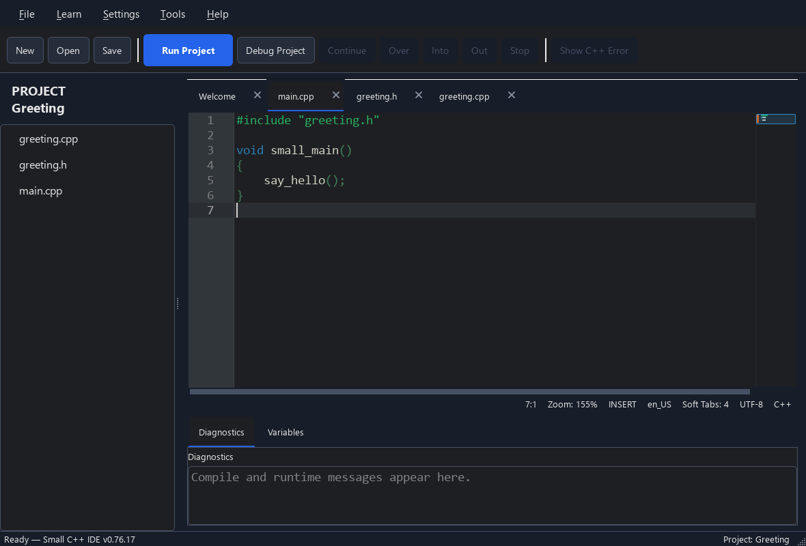
Search and select libraries in Tools → Libraries. Missing packages are installed with your confirmation when you build. Sort the list and watch update or installation progress.
Explore the tutorial ↗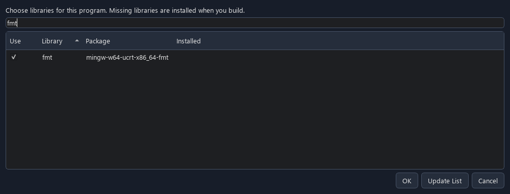
Package your program with the DLLs it needs and any images, sounds or data you add. Share the output folder or ZIP so a friend can run it without installing the IDE.
Explore the tutorial ↗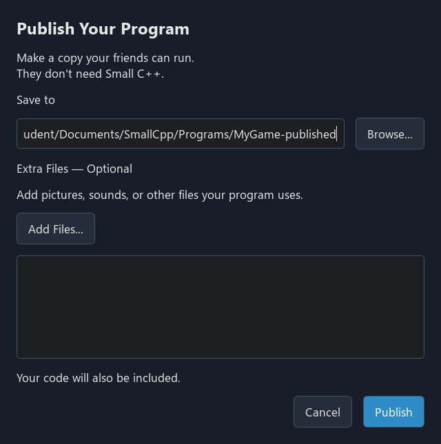
Choose a light or dark theme and a comfortable editor font size. Load a QSS stylesheet when you want to customize the IDE further.
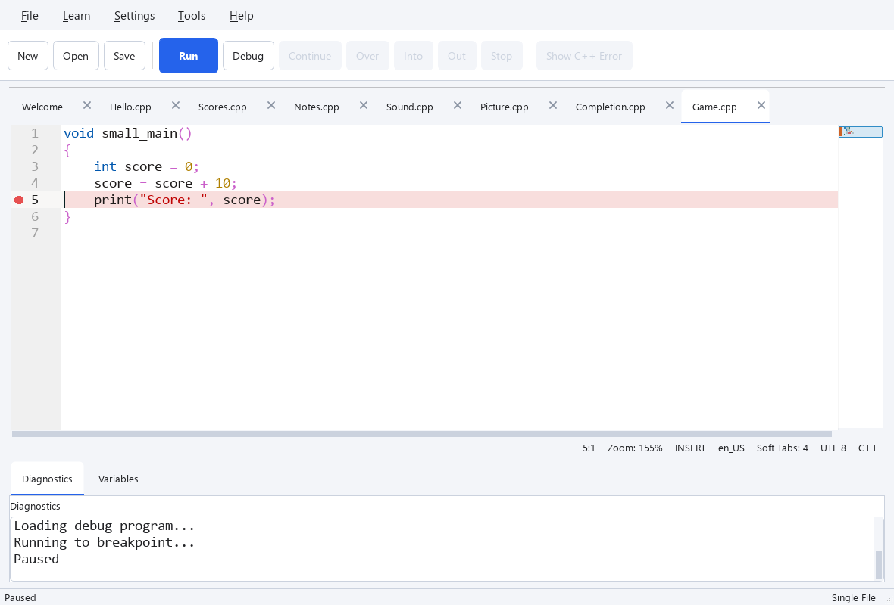
THE TOOLS ARE ALREADY HERE
The Windows bundle includes an MSYS2 environment with the MinGW-w64 UCRT64 toolchain. You can start with Run, then use the same tools directly as your interests grow.
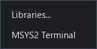
Compile real C++ into Windows programs.
Inspect a running program through the IDE debugger.
Install packages and retrieve their compiler and linker options.
Open a terminal in your program or project folder from Tools → MSYS2 Terminal.
Library selection and build settings belong to the Small C++ IDE; they are not standard C++ language features. You do not need to learn terminal commands to write your first program.
A SMALL LIBRARY. REAL C++.
Small C++ is C++. The runtime provides approachable functions and types for common tasks; the IDE supplies the entry point and links the runtime for you.
Ask a question and show the result.
print() · input() · input_int()See an example ↗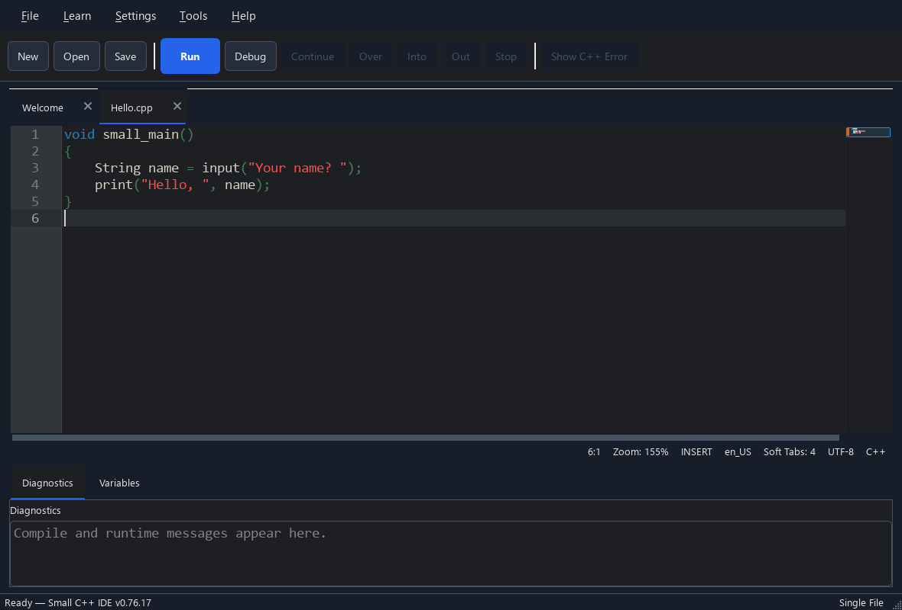
Store text and collections of values.
String · Array<T>See an example ↗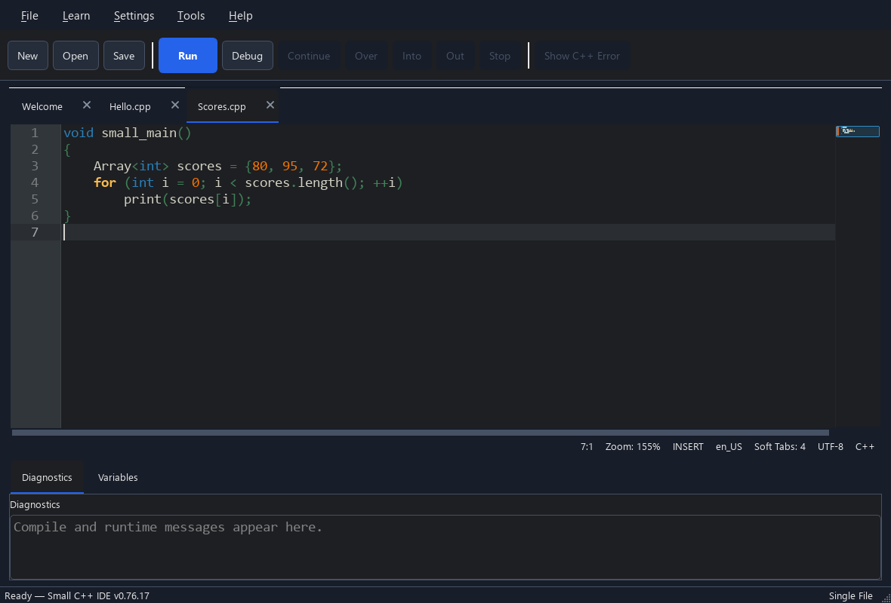
Draw in a window and respond to keys or the mouse.
Window · Color · KeySee an example ↗Animate, measure time and play sounds.
StopWatch · play_sound()See an example ↗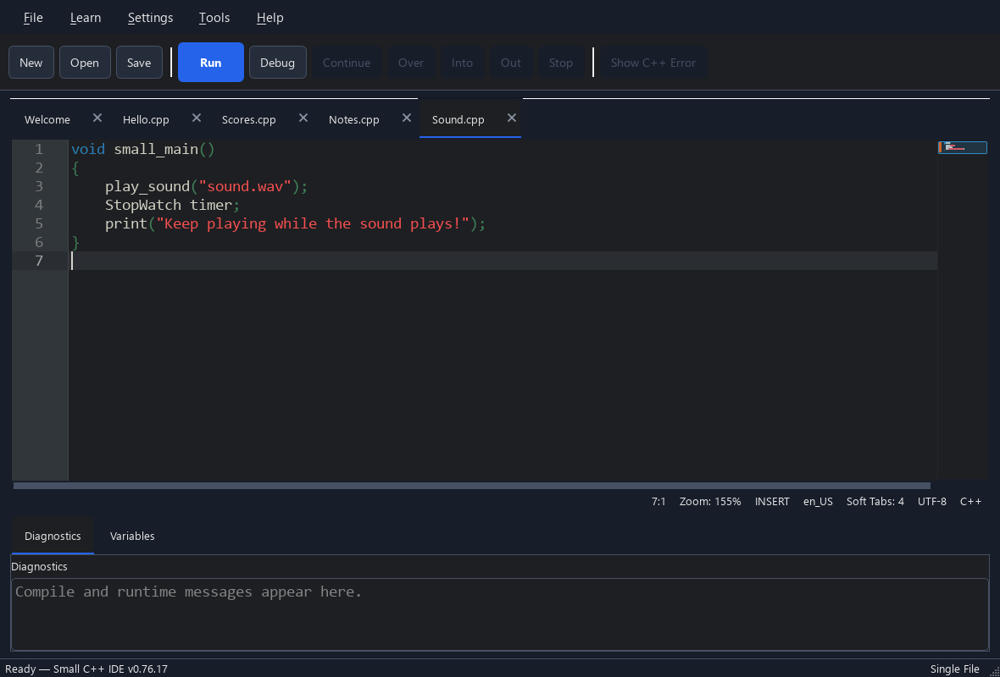
Save your work and read it back.
File · FileModeSee an example ↗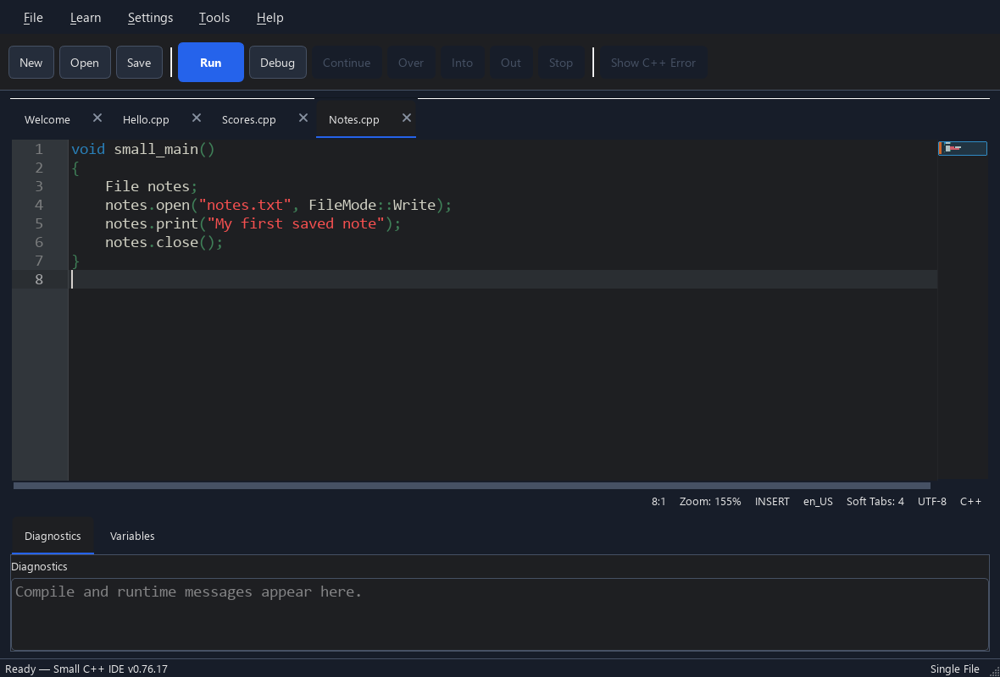
Create images, edit pixels and load or save image files.
Image · <small/image.h>See an example ↗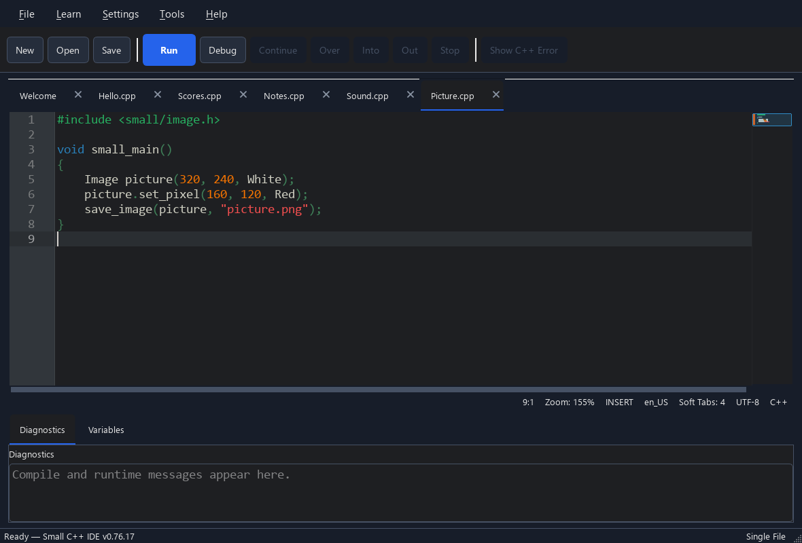
No project setup or boilerplate for this first step. Press Run and see your output.
API quick reference ↗void small_main()
{
print("Hello, world!");
}